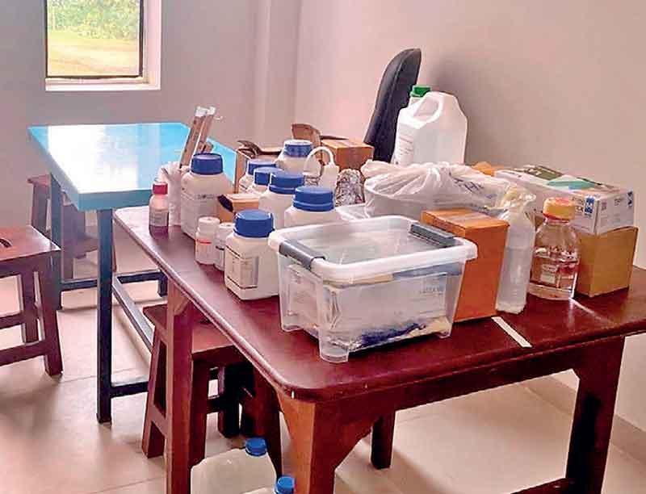

Burhani Serendib School celebrates 42 years with Global Robotics opportunity

Gampaha Siddhayurveda Medical College was established in 1929 by Ayurveda Chakravarthi Pandit G. P. Wickramarachchi Siddharyuveda as a centre for Ayurvedic education. In 1995, the college was elevated to university status as an affiliated institution of University of Kelaniya under the Parliament Act No. 30 of 1982. Later, on March 1, 2020, it was officially designated as an Indigenous Medical University through state intervention under the Universities Act No. 16 of 1978.
Accordingly, Gampaha Wickramarachchi University of Indigenous Medicine became the 16th state university in Sw ri Lanka. However, at the time of its establishment as a university, it lacked essential infrastructure and facilities. Instead of addressing these needs, the previous government introduced three additional faculties alongside the Faculty of Medicine without making necessary improvements. These included the Faculty of Indigenous Health Sciences and Technology, the Faculty of Indigenous Social Sciences and Management Studies, and the Graduate Studies Faculty. The Faculty of Health Sciences and Technology consists of three departments: the Department of Indigenous Health Sciences, the Department of Technology, and the Department of Indigenous Medical Resources. The programmes offered by these faculties lead to highly regarded professional careers, with each course spanning four years of study.
The Faculty of Indigenous Health Sciences and Technology has students across three years of academic study. Currently, 837 students are enrolled, with 274 in the first year, 242 in the second year, and 321 in the third year. The faculty offers several specialised honours degree programmes, including Bachelor of Science Honours in Indigenous Medicinal Resources, Bachelor of Health Science Honours in Information and Communication Technology, Bachelor of Health Science Honours in Biomedical Technology, Bachelor of Health Science Honours in Indigenous Pharmaceutical Technology, and Bachelor of Science Honours in Health Tourism and Hospitality Management. Additionally, it offers Sri Lanka’s first Honours Degree in Yoga and Parapsychology, a four-year programme specialising in Yoga, Parapsychology, Indigenous Medical Science focusing on enhancing both physical and spiritual well-being of individuals.
The Bachelor of Science Honours in Indigenous Medicinal Resources programme offers specialisations in Botany, Zoology, Crop Science, and Agribusiness Management, aimed at developing medicinal resources. The Bachelor of Health Science Honours in Information and Communication Technology programme focuses on Health Information and Communication. The Bachelor of Health Science Honours in Biomedical Technology programme includes specializations in Biomedical Technology and Instrumentation and is offered by the Department of Technology. The Bachelor of Health Science Honours in Indigenous Pharmaceutical Technology programme emphasises on improving the quality, safety, and effectiveness of Indigenous Medicine. The Bachelor of Science Honours in Health Tourism and Hospitality Management programme is offered through the Department of Indigenous Medical Resources and specialises on health tourism and hospitality.
The Faculty of Indigenous Health Sciences and Technology is currently facing several major challenges. The most pressing issue is the lack of a permanent location for the faculty. At present, students are studying in a four-story building originally designated for the Faculty of Indigenous Medicine. Additionally, with new students enrolling after the 2025 Advanced Level examinations, the university’s total student population is expected to rise to 1,300. One department of the faculty is currently housed in a privately rented function hall. It is a requisite that all courses in this faculty have to be interconnected with practical experiments, but the faculty lacks laboratories and specialised lecture halls, making it difficult to conduct the required practical work within the stipulated time frame, according to representatives of the Faculty of Indigenous Health Sciences and Technology Student Union. They added that this situation has forced lecturers to focus on theoretical teaching rather than practical training.
Questions raised about quality of curriculum
Concerns have also been raised about the quality of the curriculum of every degree programme. The governing authority frequently makes irregular changes to course content every year, which has severely impacted the quality of the programmes. As a result the academic progress of the students has been significantly affected. Furthermore, there are allegations that some lecturers in the Faculty of Indigeous Health Sciences and Technology lack specialised knowledge in the subjects they teach. This issue was even raised in Parliament during the previous government, yet no effective solution has been implemented, according to Student union representatives.
A lab at the university which lacks facilities
The shortage of lecturers is another significant issue. The Faculty of Indigenous Health Sciences and Technology has only six senior lecturers. Student union representatives highlight that, despite four years passing since the faculty was established, no senior professor has been appointed. Another major concern is the difficulties encountered by students when they enter the job market. While they have access to competitive job opportunities, there is no formal regulatory framework to support them. Medical professionals graduating from this university complete their degrees with only theoretical knowledge and no practical experience, leading to a decline in student productivity. Furthermore, internship training hasn’t been approved yet. According to the Sri Lanka Qualifications Framework (SLQF) and the University Grants Commission’s recommendations, students in degree programmes must undergo professional training under proper supervision. However, student union representatives said that the higher authorities of the University have failed to implement a permanent solution or take any meaningful action to address this issue.
The university operates outside the Sri Lanka Qualifications Framework, and special approval from a recognised regulatory body is required for national and apprenticeship degree programmes. However, student union representatives expressed concern that these courses have not been registered with any relevant institutions or ministries. To address the ongoing issues, student union representatives have put forward several key proposals. These include securing a permanent location for the Faculty of Indigenous Health Sciences and Technology, resolving issues with syllabus, reviewing subject content, appointing qualified lecturers with expertise in their fields, and establishing formal regulations to ensure job security.
Additionally, student representatives highlighted administrative irregularities within the faculty, which have led to numerous problems. Certain actions taken by a former dean have significantly impacted the university’s future. Decisions made by the Senate Meeting, the Council, and Faculty Boards at that time have had lasting consequences for students. As a result, the student union has requested the Ministry of Higher Education to conduct a special investigation into these matters.